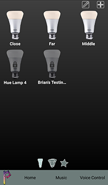
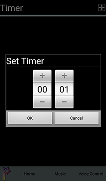
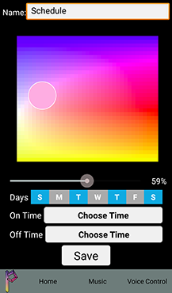

Tutorial
When you first open Prism Lights, it will automatically search for bridges. Please make sure you have your bridge directly connected to your router, and plugged in. If it fails to find a bridge, simply hit the search for bridges button when you have checked the bridge and your local network connection. If you wish to search for bridges at any time, simply press the Prism logo button to access the bridge search page, and press "Search for Bridges"
When Prism Lights finds the Bridge it will ask for authentication.
Press the center button on the bridge to authenticate before the progress bar runs out in 30 seconds. If you don't press the button in time, you will have to search for bridges again. When your device is authenticated, the application will automatically open the home screen.
All bulbs connected to the bridge will be on the home screen. Tap bulb to toggle on/off state. To locate bulbs that aren't connnected to the bridge, tap the plus button in the top right corner.
If the bulbs you want to add have never been added to a bridge before, simply click the "Search for Lights" button. If the bulbs have been added to a bridge before, locate the serial number near each bulb base and add them to the list using the plus button in the upper right corner then press the search button.
Once you press the "Search for Lights" button, the bridge will start searching for lights. When a light is found, it will brighten and dim to let you know it's been located. When the search is complete, it will return to the homescreen.
When the search is complete, it will return to the homescreen.
To rearrange the bulbs on the home screen, press the edit button next to the plus button.
To rearrange the bulbs, long press on any bulb, move it over the bulb in the position you want it to be, and let go. To finish editing, either press the back button or the check button in the top right corner. The home screen can be reached at any time by pressing the "Home" button.
To change a bulb's color, on/off state, brightness, and other settings, long press on the bulb.
To change the color, tap anywhere inside the color picker. To change the brightness, adjust the slider. To change the name of the bulb, enter the name of the bulb into the text field and enter done on your virtual keyboard. To go back to the home screen, tap home or the back button. To start a color cycle on the bulb, tap the color cycle button.
There should be a default color cycle already present, "My First Cycle." To start the color cycle and see how the bulbs cycle through the given colors, press "Run". The button will change to "Stop," and the color cycle will begin. To stop the color cycle, either exit color cycles and change the bulb state or press stop. To delete the color cycle, press the trash button. If you would like to create your own color cycle, tap the plus button in the top right hand corner. If you would like to edit an existing color cycle, tap on the name of the color cycle in the list.
First, make sure your color cycle has a name by editing the text field at the top of the screen. To add a light state to the color cycle, tap the add button. It will create a default light state which can be edited by tapping on the color, brightness, duration, or transition values. To delete the state simply tap the trash can in line with the light state. To save the color cycle, tap save. To cancel editing, press the back button. If you want to return to the light settings page, press the back button again.
To reach more advanced features, tap "Advanced."
To add or look at alarms, timers, or schedules, tap the similarly titled button. To activate smart sunset or sunrise, tap the button on the line next to the title. It will use your current location to get the sunset and sunrise times for automatically turning on and off the bulbs. To add a bluetooth beacon association to the bulb for proximity lighting, tap beacons.
To create an alarm, tap the plus button in the top right corner.
Select the time you would like the alarm to go off.
Select which type of alarm you would like. If you select on, the bulb will turn on. If you select off, the bulb will turn off. If you select alert, the bulb will flash once.
Once an alarm has been created, you can view it in the alarms list, edit it by tapping it, or delete it by tapping delete.
To create a timer, tap the plus button in the top right corner.
Select the time in minutes until you would like the timer to complete.
Select which type of timer you would like. As with alarms, if you select on, the bulb will turn on. If you select off, the bulb will turn off. If you select alert, the bulb will flash once.
Once a timer has been created, you can view it in the timer list, edit it by tapping it, or delete it by tapping delete.
To create a schedule, tap the plus button in the top right corner.
Add a name to your schedule by editing the text field. Select a color from the color picker you want the lights to turn on to at the time given. Use the slider to select a brightness. Then choose the days you want the schedule to repeat on (Blue is selected). Finally, select the time you want the light to turn off and the time you want it to turn on.
For a schedule, you can set the on and off times to a simple time or you can choose to use the sunrise or sunset time based on your location. When you're done creating the schedule tap save.After the schedule is added to the bridge it will show up in your schedules list where you can delete it or enable and disable it.
For our proximity lighting to work, place an Estimote bluetooth beacon close to the bulb. Then, make sure your bluetooth is on. Choose a the maximum range from the beacon your phone should be before it automatically turns the light off. When your phone is within this range, it will automatically turn the light on. Then place your phone close to the beacon and tap start tracking. If the label beneath "Associated Beacon" changes from "no beacon" to a number, you'll know that the beacon is being tracked. If you want to stop controlling the light with bluetooth, simply tap "Stop Tracking." The bluetooth control will work as long as Prism Lights is running in the background on your phone.
If you return to the home screen and swipe from right to left, you'll see the groups home screen.
From this screen, you can tap any group to turn the bulbs in it on or off. If you tap the plus button in the upper right corner, you can create additional groups.
To create a group, simply enter a name in the text field and select the bulbs you want by tapping on them (they will flash once as you do so). When done choosing bulbs, simply click the done button and the group will be added and you will return to the group home screen. If you want to cancel, simply hit the back button.
To rearrange or remove the groups on the group home screen, tap on the edit button next to the plus button on the groups home screen.
Groups can be rearranged in the same way as lights, and they can be deleted by selecting them and pressing the trash button next to the checkmark in the upper right corner. To return to the groups home screen tap the check mark.
Just as on the lights home page, you can long pres on any group to enter its settings.
Group settings allow you to do anything you can do with lights (except on the special "All Lights" group which only permits basic manual control. You cana easily access alarms, timers, beacons, schedules, and color cycles in the same way as you do with lights. However, you can also choose to edit the group by tapping the edit button next to the group name field.

This screen allows you to edit the group in the same way as you created it.
If you return to the groups home page and swipe from right to left once more, you'll be at the favorites home screen.
There will already be two defaults present. The first, "Normal All On," will turn all the lights connected to the bridge on and set them to the color the lights are originally set to when you first turn them on. The second, "All Off," will turn all the lights connected to the bridge off. To activate a favorite simply tap it. To create a favorite, simply tap the plus button in the top right corner.
Similarly, to adding a group you can select bulbs and choose a name for the favorite. The application will save the current state of the bulbs selected to be restored when the favorite is activated. To change the state of a bulb while in the favorite creation screen, simply long press on any bulb, and the application will open the light settings for that bulb, allowing you to change its state. When you're finished selecting bulbs, tap "Done" and you'll be returned to the favorites home screen.
From that screen, if you tap the edit button next to the plus button, you can rearrange and delete favorites in the same way as groups.

When you've returned to the favorites home screen, you can also edit any favorite by long pressing it. The favorite will activate and you'll be able to edit it in the same way as you created it. If you change your mind and want to cancel, hit the back button.
From any screen, you can tap on the "Music" tab at the bottom of the screen to start controlling the lights with music.
Here, you can choose the beats per minute of your song with the slider as well as choose low, middle, and high ranges for the song. Tap "Select Lights" to choose which bulbs will be associated with each range.
Tap the appropriate range for each bulb. If you don't want the bulb to be controlled by music, tap "None." When done choosing ranges, tap the back button. Now that your music control is fully set up, tap the button in the bottom right corner to activate music control.
Note: Music control only works when the application is on the music screen, open, and your device is unlocked.
From any screen, you can tap on the "Voice Control" tab at the bottom of the screen to start controlling the lights with your spoken English commands.
Tap the mic to activate voice control, and say something like "Turn all bulbs on" and the application will interpret your words and turn the bulbs on.
Note: Due to an unexpected bug with Wit.ai, our voice processing sdk, this portion of the application is not currently functional.